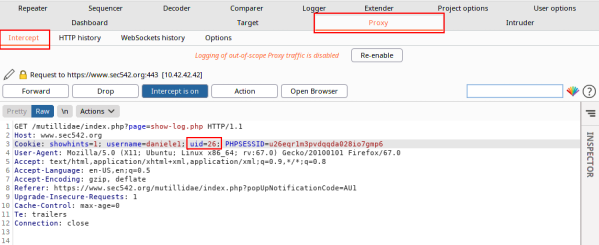
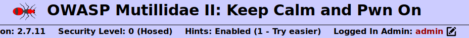

example: Mantain persistent Authentication
Maintain persistent authentication bypass
In the examples
Authentication Bypass and
enumerate Authentication Bypass we are been able to bypass the Authentication, but only on a single page of the Website. In fact the authentication is reverted to our own logged-in user when we click on another page.
How maintain persistent authentication bypass to the entire site?
1. Intercept the request with the vulnerable cookie
2. Proxy → Options → Match and Replace → Add
we have set "Replace" with "uid=1" because during the previouse example in
enumerate Authentication Bypass we have found that it was the value of the Admin.
3. Now we should be logged in every page as uid=1 (Admin)
